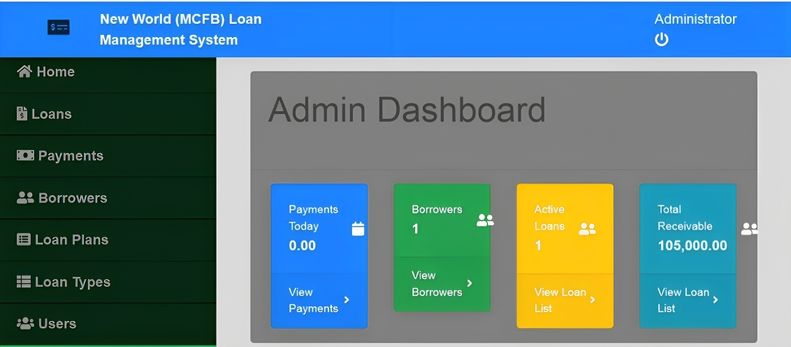

The Web-based loan management system as described above was implemented in other Big financial institutions in Nigeria. But New World microfinance has not yet found such an opportunity to use this kind of a system. Given the numerous benefits that come with computer based systems, there is need to design such a system for this small institution. New World Microfinance uses paper based loan management system, clients fill in forms by pen and the information is stored on paper and sometimes on hard disks and other secondary storage devices. This data is also hard to access unless one is on the premises of New World Microfinance and also keeping records is hard since it is only stored on hard disks, Compact Disks and other secondary storage systems which get spoilt, crash and sometime stolen. Data is therefore lost and cannot be retrieved. Hence the call for the design of a web-based loan management system. New World Micro Finance Bank is a fast growing financial institution; correspondingly, its lending capacity is increasing in figures and scope. Currently its software application is very slow and not user friendly. The System development methodology is a technique that is used to show how the proposed system will be developed. In this case, the methodology used is a waterfall model. The method use for data gathering is interview, The Loan Management System Project In PHP is a simple system develop PHP MySQL database, Using HTML, CSS, Bootstrap, JavaScript, Ajax, J Query, and Modal. This Loan Management System Using PHP is a simple project that managing loan data for a certain company or lending company.
Admin Page
